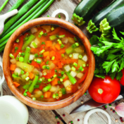
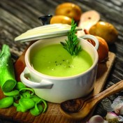
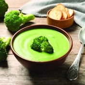

1.ČORBA OD POVRĆA
Sastojci:
1 manji celer
1 koren peršuna
1 šargarepa
1 glavica crnog luka
2 čena belog luka
svež list peršuna
mešavina sušenog povrća
ovsene pahuljice
2 kašike hladno ceđenog maslinovog ulja
voda
Priprema recepta:
Povrće očistiti, iseći na veće komade, a zatim iseckati u električnom secku.
U šerpu staviti maslinovo ulje, zagrejati, pa dodati povrće i mešati.
Po malo dodavati vodu i dinstati dok povrće ne omekša. Dodati mešavinu sušenog povrća,
a zatim 1l vode i kuvati. Ovsene pahuljice se dodaju kako bi zgusnule čorbu i mogu se dodati ili cele,
ili prethodno samlevene. Posoliti po ukusu.

2.SUPA SA KROMPIROM I PRAZILUKOM
Sastojci
1kg krompira
2 praziluka
480ml bademovog mleka
1 kruška
so, biber i muskatni oraščić prema ukusu
luk vlašac
Priprema recepta:
Krompir operite, ogulite i isecite na manje komade. Praziluk (i beli i zeleni deo) isecite na manje komade. U posudu za supu uspite bademovo mleko, dodajte krompir i zagrejte do ključanja, a zatim smanjite temperaturu i
kuvajte krompir još desetak minuta. Zatim dodajte praziluk i
oguljenu i naseckanu krušku, pa kuvajte još 10-15 minuta, dok krompir ne
omekša.
Uklonite sa ringle i ostavite da se supa prohladi,
a zatim je prebacite u blender i miksajte dok se sadržaj ne ujednači.
Potom supu ponovo ugrejte, posolite, stavite biber i muskatni oraščić po ukusu. Servirajte sa naseckanim vlašcem. Ova supa je kremaste konzistencije sa blagim ukusom slasti koji daje kruška.

3.SUPA SA BROKOLIJEM
Sastojci
1,5kg brokolija
90ml hladno ceđenog maslinovog ulja
so, biber
4 stabljike celera
1 crni luk
1,8l pileće supe ili supe od povrća
500ml mleka
60g kisele pavlake
hleb od celog zrna žita
Priprema recepta:
Zagrejte rernu na 200°C. Brokoli podelite na sitnije komade, posolite, prelijte sa 60ml maslinovog ulja, a zatim ravomerno rasporedite po plehu i pecite dvadesetak minuta. U međuvremenu zagrejte ostatak maslinovog ulja na temperaturu srednje jačine, pa dodajte naseckan celer, šargarepu, crni luk, so i biber i dinstajte dok povrće ne omekša. Zatim dodajte supu i pečeni brokoli, a kada supa proključa smanjite temperaturu i ostavite da se krčka još oko pola sata. Sklonite sa ringle, dodajte mleko i štapnim mikserom
(ili u blenderu) sve izmiksajte. Poslužite uz integralni hleb i kiselu pavlaku.
